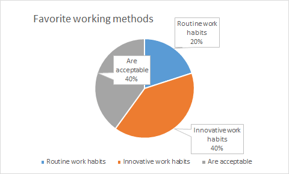
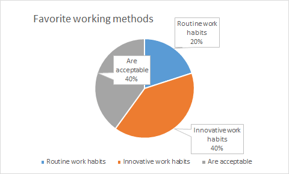

Customers prefer DSS more.
At the same time, most of them (60%) hope that they can get started quickly when operating the system
And they hope that they can be put into production quickly.
And we can accept that part of them can improve their workflow to improve their work efficiency.